d1 <-read.table("C:/Users/tangw1/Desktop/ST558_repo/hw5/student-mat.csv", sep=";", header=TRUE)d2 <-read.table("C:/Users/tangw1/Desktop/ST558_repo/hw5/student-por.csv", sep=";", header=TRUE)# Merge the two data frames using the example coded3 <-merge(d1, d2, by=c("school", "sex", "age", "address", "famsize", "Pstatus", "Medu", "Fedu", "Mjob", "Fjob", "reason", "nursery", "internet"))print(nrow(d3)) # Should output 382 students
[1] 382
Use tidyverse to repeat the step, and this approach returns an issue (see note).
library(tidyverse)
Warning: package 'tidyverse' was built under R version 4.3.3
Warning: package 'ggplot2' was built under R version 4.3.3
Warning: package 'tibble' was built under R version 4.3.1
Warning: package 'tidyr' was built under R version 4.3.3
Warning: package 'readr' was built under R version 4.3.3
Warning: package 'purrr' was built under R version 4.3.3
Warning: package 'dplyr' was built under R version 4.3.1
Warning: package 'stringr' was built under R version 4.3.2
Warning: package 'forcats' was built under R version 4.3.3
Warning: package 'lubridate' was built under R version 4.3.3
── Attaching core tidyverse packages ──────────────────────── tidyverse 2.0.0 ──
✔ dplyr 1.1.3 ✔ readr 2.1.5
✔ forcats 1.0.0 ✔ stringr 1.5.1
✔ ggplot2 3.5.1 ✔ tibble 3.2.1
✔ lubridate 1.9.3 ✔ tidyr 1.3.1
✔ purrr 1.0.2
── Conflicts ────────────────────────────────────────── tidyverse_conflicts() ──
✖ dplyr::filter() masks stats::filter()
✖ dplyr::lag() masks stats::lag()
ℹ Use the conflicted package (<http://conflicted.r-lib.org/>) to force all conflicts to become errors
# Read in the data using read_csv from the readr packaged4 <-read_delim("C:/Users/tangw1/Desktop/ST558_repo/hw5/student-mat.csv", col_names =TRUE, delim =";")
Rows: 395 Columns: 33
── Column specification ────────────────────────────────────────────────────────
Delimiter: ";"
chr (17): school, sex, address, famsize, Pstatus, Mjob, Fjob, reason, guardi...
dbl (16): age, Medu, Fedu, traveltime, studytime, failures, famrel, freetime...
ℹ Use `spec()` to retrieve the full column specification for this data.
ℹ Specify the column types or set `show_col_types = FALSE` to quiet this message.
Rows: 649 Columns: 33
── Column specification ────────────────────────────────────────────────────────
Delimiter: ";"
chr (17): school, sex, address, famsize, Pstatus, Mjob, Fjob, reason, guardi...
dbl (16): age, Medu, Fedu, traveltime, studytime, failures, famrel, freetime...
ℹ Use `spec()` to retrieve the full column specification for this data.
ℹ Specify the column types or set `show_col_types = FALSE` to quiet this message.
# Combine the data frames using inner_joind6 <-inner_join(d1, d2, by =c("school", "sex", "age", "address", "famsize", "Pstatus", "Medu", "Fedu", "Mjob", "Fjob", "reason", "nursery", "internet"))
Warning in inner_join(d1, d2, by = c("school", "sex", "age", "address", : Detected an unexpected many-to-many relationship between `x` and `y`.
ℹ Row 79 of `x` matches multiple rows in `y`.
ℹ Row 79 of `y` matches multiple rows in `x`.
ℹ If a many-to-many relationship is expected, set `relationship =
"many-to-many"` to silence this warning.
print(nrow(d3))
[1] 382
# Note: Had issues when combining data: "Detected an unexpected many-to-many relationship between `x` and `y'"
Use a subset of all variables when combining the two data frames. No issues noted.
# define the columns to join, excluding G1, ...join_columns <-setdiff(names(d1), c("G1", "G2", "G3", "paid", "absences"))# Combine the data frames using inner_join on the selected columnsd7 <-inner_join(d4, d5, by = join_columns)print(nrow(d7)) # Should output the number of matching students
[1] 320
Choose four categorical variables and convert those into factor variables.
# I choose the following 4 categorical variables: school, Fjob, reason, and famsize.math_data <- d4 %>%mutate(school =as.factor(school),Fjob =as.factor(Fjob),reason =as.factor(reason),famsize =as.factor(famsize) )por_data <- d5 %>%mutate(school =as.factor(school),Fjob =as.factor(Fjob),reason =as.factor(reason),famsize =as.factor(famsize) )combined_data <- d7 %>%mutate(school =as.factor(school),Fjob =as.factor(Fjob),reason =as.factor(reason),famsize =as.factor(famsize) )
Task 2: Summary the data (Very basic EDA)
I use the following functions to look at how the data is stored and see if everything makes sense.
head(combined_data) # display first 10 rows
# A tibble: 6 × 38
school sex age address famsize Pstatus Medu Fedu Mjob Fjob reason
<fct> <chr> <dbl> <chr> <fct> <chr> <dbl> <dbl> <chr> <fct> <fct>
1 GP F 18 U GT3 A 4 4 at_home teacher course
2 GP F 17 U GT3 T 1 1 at_home other course
3 GP F 15 U GT3 T 4 2 health servic… home
4 GP F 16 U GT3 T 3 3 other other home
5 GP M 16 U LE3 T 4 3 services other reput…
6 GP M 16 U LE3 T 2 2 other other home
# ℹ 27 more variables: guardian <chr>, traveltime <dbl>, studytime <dbl>,
# failures <dbl>, schoolsup <chr>, famsup <chr>, paid.x <chr>,
# activities <chr>, nursery <chr>, higher <chr>, internet <chr>,
# romantic <chr>, famrel <dbl>, freetime <dbl>, goout <dbl>, Dalc <dbl>,
# Walc <dbl>, health <dbl>, absences.x <dbl>, G1.x <dbl>, G2.x <dbl>,
# G3.x <dbl>, paid.y <chr>, absences.y <dbl>, G1.y <dbl>, G2.y <dbl>,
# G3.y <dbl>
str(combined_data) # examine the structure of the data
course home other reputation
GP 106 79 22 80
MS 12 8 8 5
The above output shows that the count of observations where the student is from ‘GP’ and the reason why they choose ‘GP’ being ‘course’ is 106, and so forth.
, , = GT3
course home other reputation
GP 79 54 18 57
MS 6 7 6 3
, , = LE3
course home other reputation
GP 27 25 4 23
MS 6 1 2 2
The above output shows that for family size of ‘GT3’, the count of observations where the stsudent is from ‘GP’ and the reason why they choose ‘GP’ being course is 79, and so forth.
Now, create a conditional 2-way table using table().
# Do it by subsetting the data first.subset_data <- combined_data %>%filter(school =="GP")cond_2way_table <-table(subset_data$reason, subset_data$famsize)cond_2way_table
GT3 LE3
course 79 27
home 54 25
other 18 4
reputation 57 23
# Do it by creating a three-way table firstthree_way <-table(combined_data$school, combined_data$reason, combined_data$famsize)conditional_2way_table <- three_way["GP", , ]conditional_2way_table
GT3 LE3
course 79 27
home 54 25
other 18 4
reputation 57 23
Create a 2-way contingency table using group_by() and summarize(), then format it.
# A tibble: 4 × 3
reason GT3 LE3
<fct> <int> <int>
1 course 85 33
2 home 61 26
3 other 24 6
4 reputation 60 25
Create a stacked bar graph and a side-by-side bar graph.
library(ggplot2)# Stacked bar graphstacked_bar <-ggplot(combined_data, aes(x = famsize, fill = reason)) +geom_bar(position ="stack") +labs(title ="Stacked Bar Graph of Reasons by Family Size",x ="Family Size",y ="Count",fill ="Reason") +theme_minimal()stacked_bar
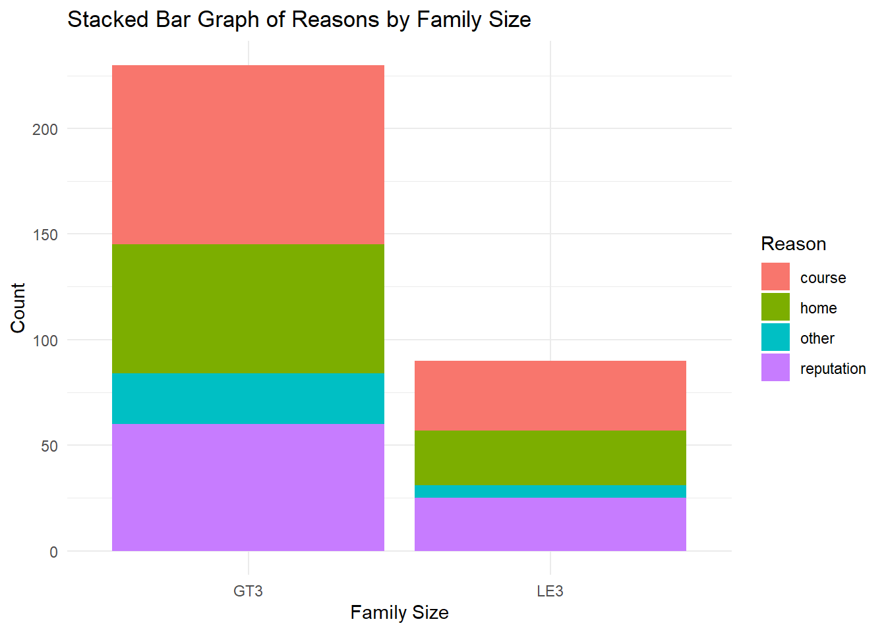
# Side-by-Side Bar Graphside_by_side_bar <-ggplot(combined_data, aes(x = famsize, fill = reason)) +geom_bar(position ="dodge") +labs(title ="Side-by-Side Bar Graph of Reasons by Family Size",x ="Family Size",y ="Count",fill ="Reason") +theme_minimal()side_by_side_bar
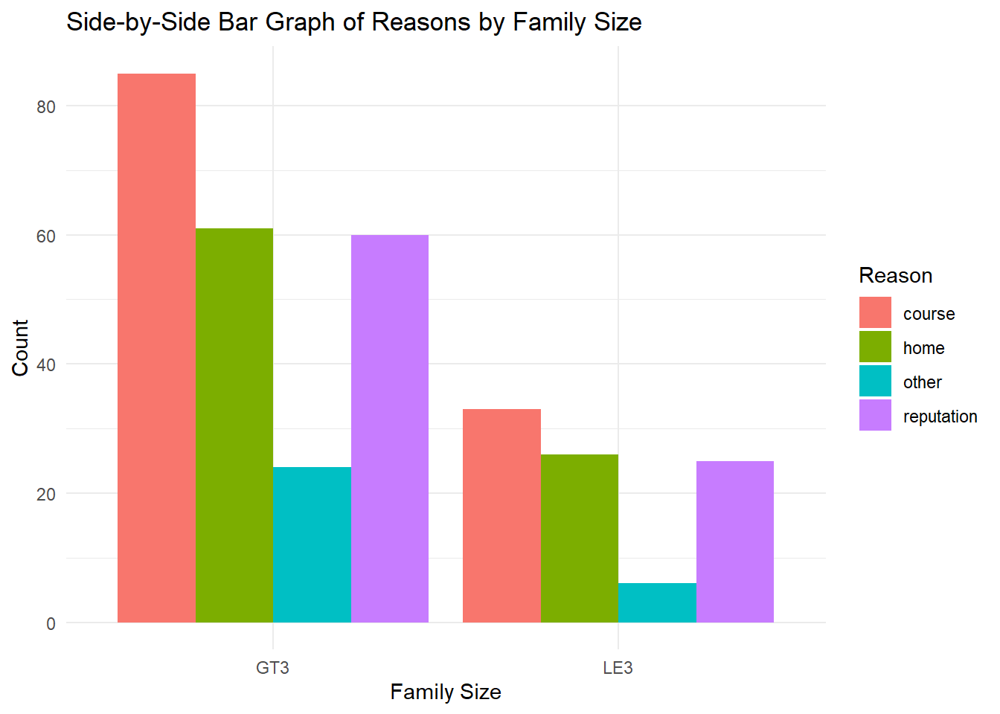
For numerical variables, find measures of center and spread for three of them.
# To measure center, I use mean and median. To measure spread, I use standard deviation.combined_summary <- combined_data %>%summarize(age_mean =mean(age),age_median =median(age),age_sd =sd(age),# absences_mean =mean(absences.x),absences_median =median(absences.x),absences_sd =sd(absences.x),G3_mean =mean(G3.x),G3_median =median(G3.x),G3_sd =sd(G3.x) )# Print the summarycombined_summary
# histogram plot for G3 across schoolhistogram_plot <-ggplot(combined_data, aes(x = G3.x, fill = school)) +geom_histogram(position ="identity", , bins =30) +labs(title ="Histogram of G3 Scores by School",x ="G3 Score",y ="Count",fill ="School") print(histogram_plot)
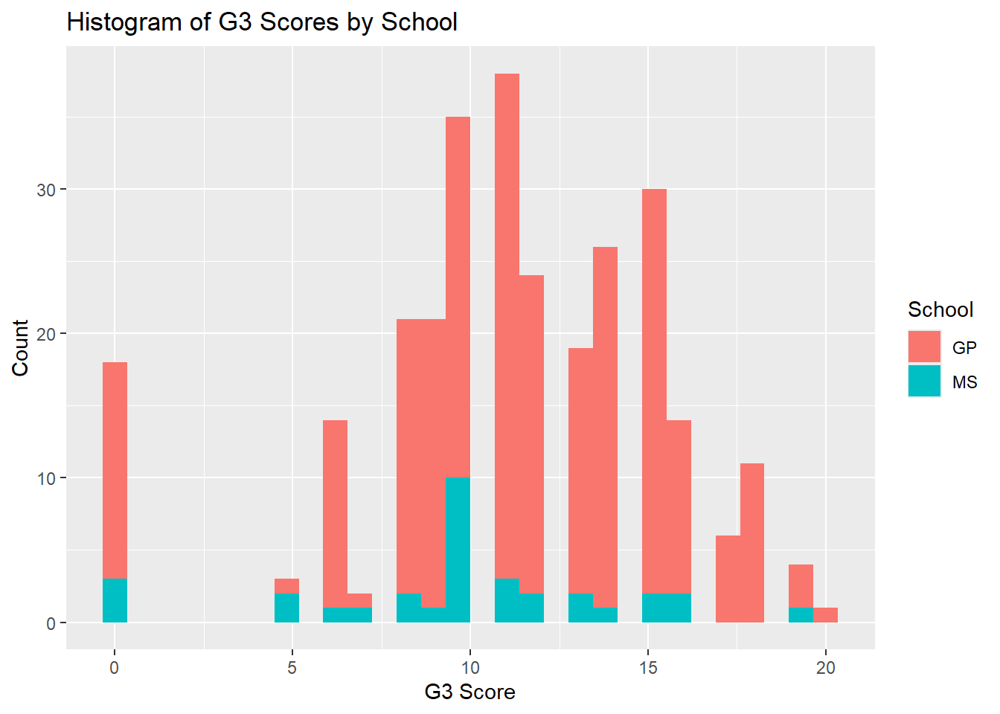
# Kernel density plot for 'G3' across 'school'density_plot <-ggplot(combined_data, aes(x = G3.x, fill = school)) +geom_density(alpha =0.6) +labs(title ="Kernel Density Plot of G3 Scores by School",x ="G3 Score",y ="Density",fill ="School") print(density_plot)
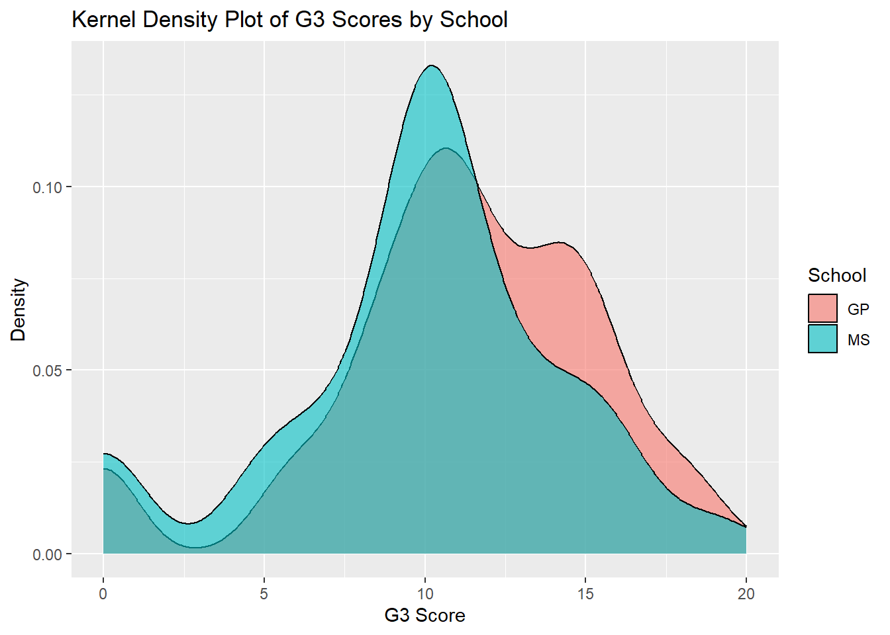
# Boxplot for 'absences' across 'school'boxplot_plot <-ggplot(combined_data, aes(x = school, y = absences.x, fill = school)) +geom_boxplot(alpha =0.7) +labs(title ="Boxplot of Absences by School",x ="School",y ="Number of Absences",fill ="School") boxplot_plot
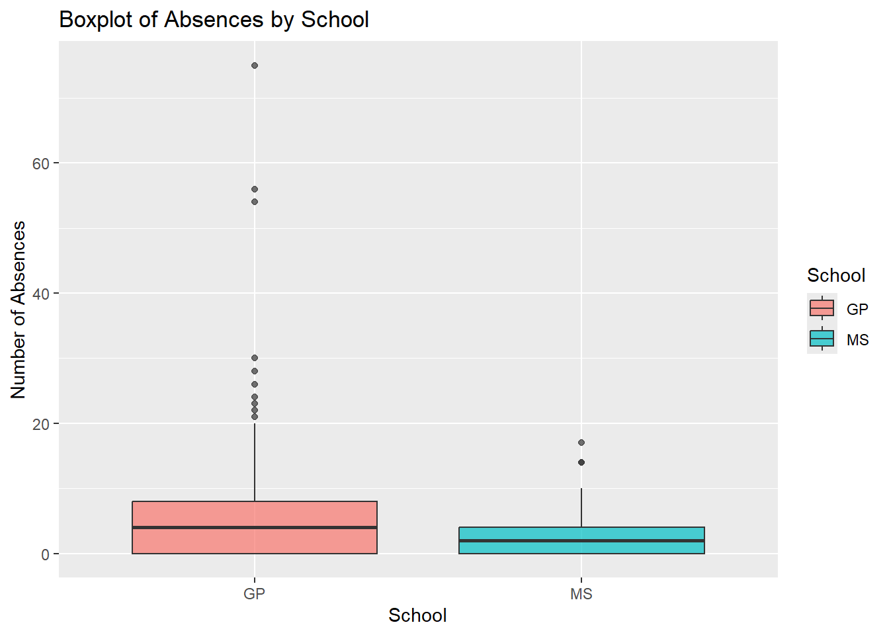
# Scatterplot of G3 vs. absencesscatterplot1 <-ggplot(combined_data, aes(x = absences.x, y = G3.x, color = school)) +geom_jitter(width =0.3, height =0.3, ) +labs(title ="Scatterplot of G3 vs. Absences Colored by School",x ="Number of Absences",y ="G3 Score",color ="School")print(scatterplot1)
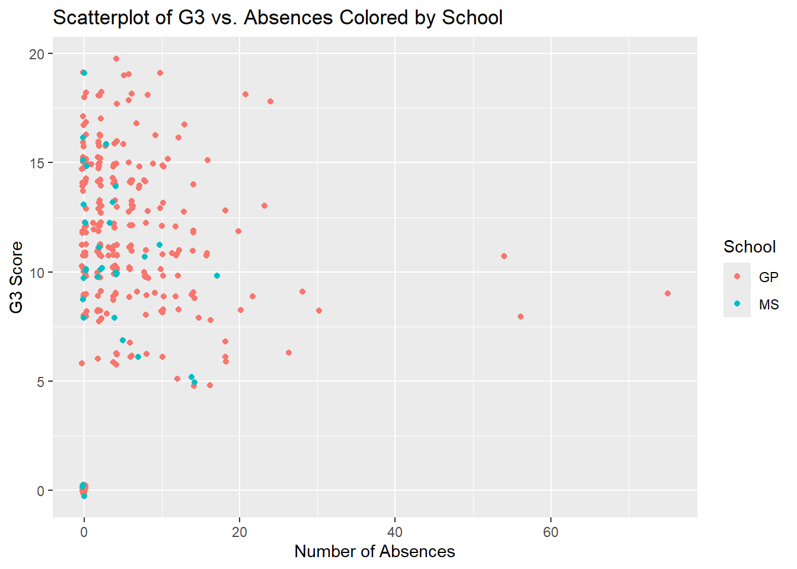
# Scatterplot of G3 vs. age, colored by famsizescatterplot2 <-ggplot(combined_data, aes(x = age, y = G3.x, color = famsize)) +geom_jitter(width =0.2, height =0.3, ) +labs(title ="Scatterplot of G3 vs. Age Colored by Family Size",x ="Age",y ="G3 Score",color ="Family Size")print(scatterplot2)
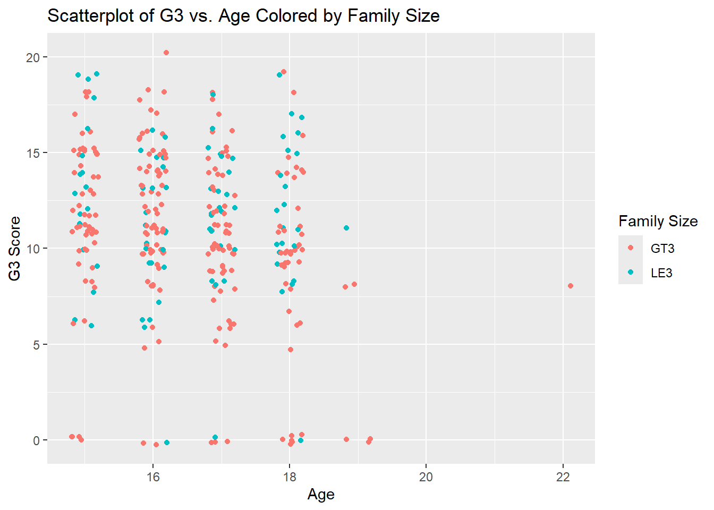
Repeat the scatter plot step but use faceting to obtain graphs
# Scatterplot of G3 vs. absences, faceted by schoolscatterplot_facet1 <-ggplot(combined_data, aes(x = absences.x, y = G3.x)) +geom_jitter(width =0.3, height =0.3, alpha =0.7, color ="blue") +facet_wrap(~ school) +labs(title ="Scatterplot of G3 vs. Absences Faceted by School",x ="Number of Absences",y ="G3 Score")print(scatterplot_facet1)
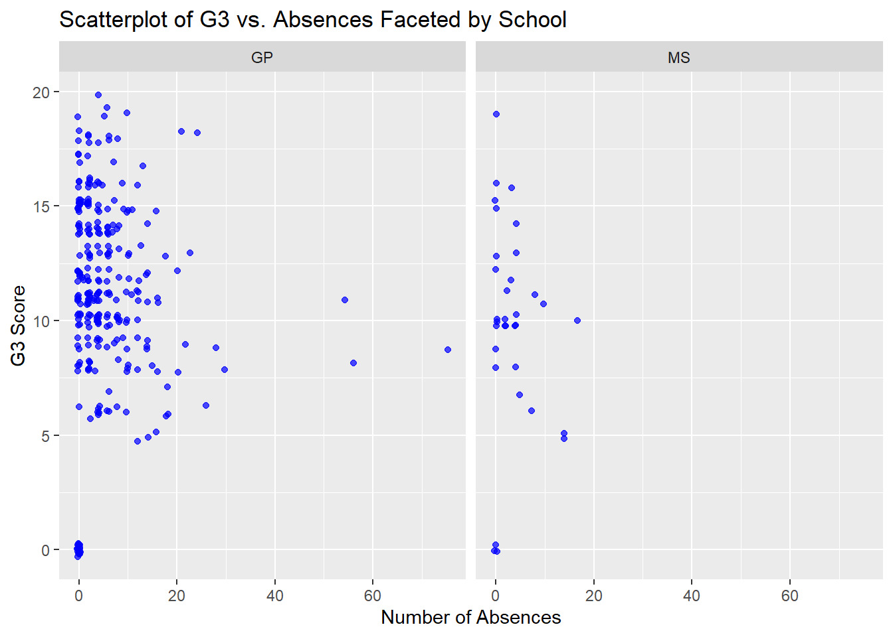
# Scatterplot of G3 vs. age, faceted by famsizescatterplot_facet2 <-ggplot(combined_data, aes(x = age, y = G3.x)) +geom_jitter(width =0.2, height =0.3, alpha =0.7, color ="red") +facet_wrap(~ famsize) +labs(title ="Scatterplot of G3 vs. Age Faceted by Family Size",x ="Age",y ="G3 Score") +theme_minimal()print(scatterplot_facet2)
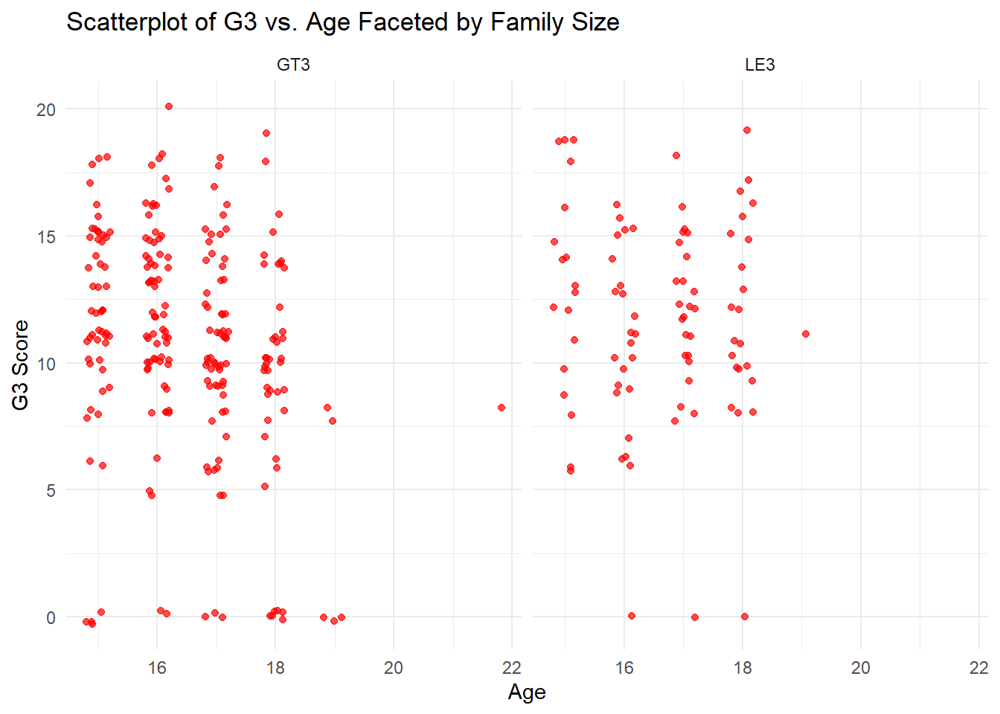
Repeat the scatter plot step but use faceting to obtain graphs at combination of 2 categorical variables
# Scatterplot of G3 vs. absences, faceted by school and famsizescatterplot_facet1 <-ggplot(combined_data, aes(x = absences.x, y = G3.x)) +geom_jitter(width =0.3, height =0.3, alpha =0.7, color ="blue") +facet_grid(famsize ~ school) +labs(title ="Scatterplot of G3 vs. Absences Faceted by School and Family Size",x ="Number of Absences",y ="G3 Score") print(scatterplot_facet1)
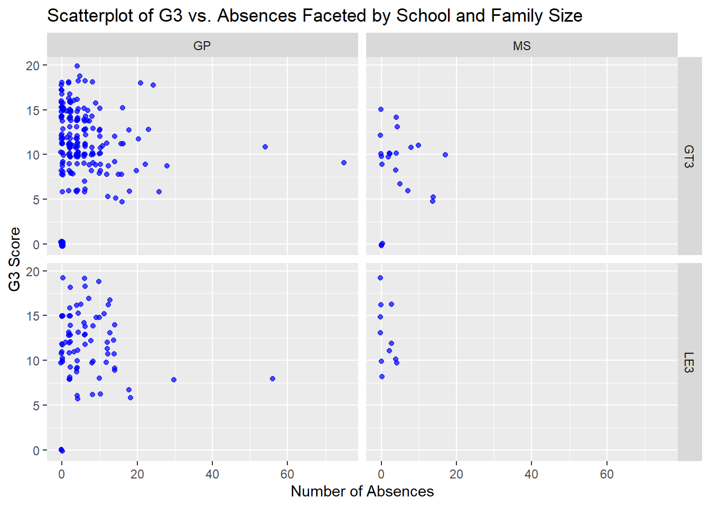
# Scatterplot of G3 vs. age, faceted by school and famsizescatterplot_facet2 <-ggplot(combined_data, aes(x = age, y = G3.x)) +geom_jitter(width =0.2, height =0.3, alpha =0.7, color ="red") +facet_grid(famsize ~ school) +labs(title ="Scatterplot of G3 vs. Age Faceted by School and Family Size",x ="Age",y ="G3 Score") print(scatterplot_facet2)
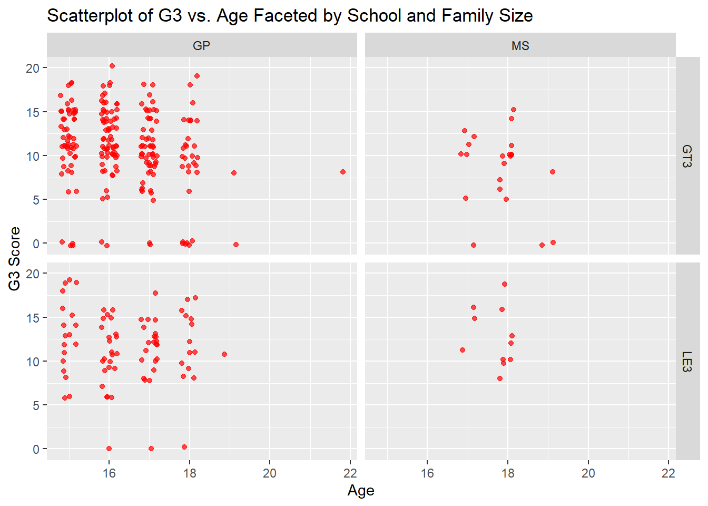
The above graphs show different patterns of absences, G3 among the two schools. There’s also some combined influence of ‘school’ and ‘family size’ on the students’ performance (grades)